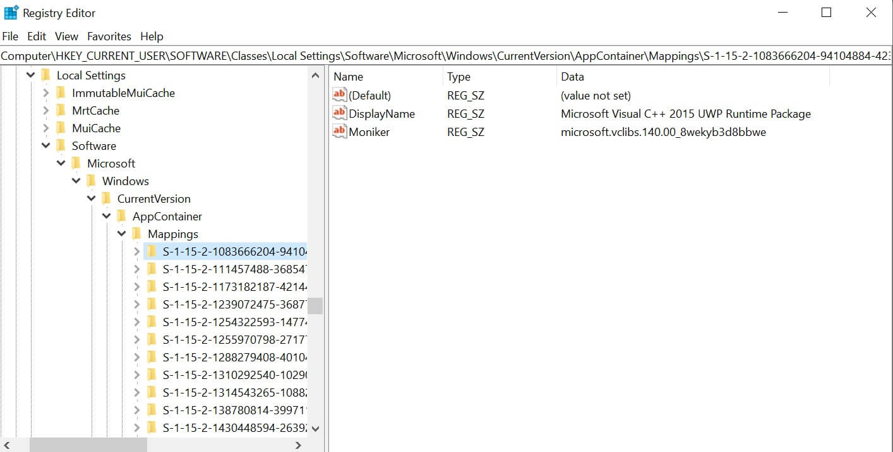
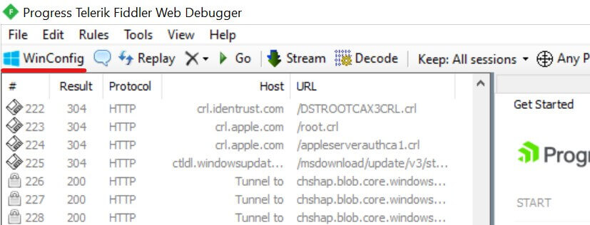
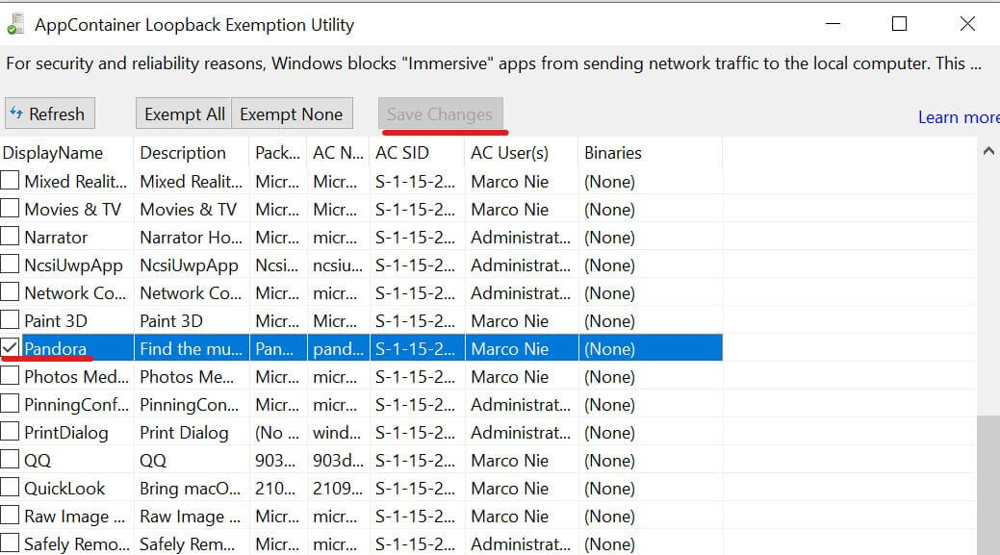
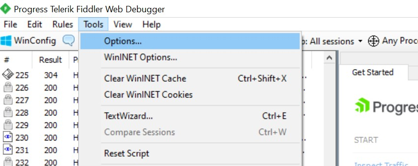
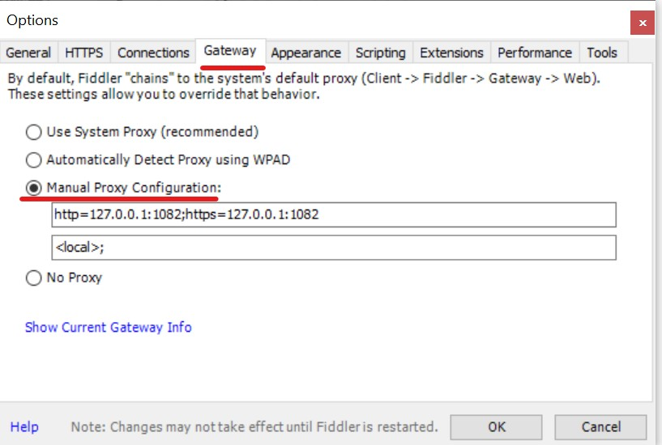

这篇文章上次修改于 347 天前，可能其部分内容已经发生变化，如有疑问可询问作者。
Microsoft store 里都是 UWP 应用，运行在被称为 App Container 的虚拟沙箱环境中，其安全性及纯净度远胜于传统的 EXE 应用。但 App Container 机制同时也阻止了网络流量发送到本机（即 loopback）， 使大部分网络抓包调试工具无法对 UWP 应用进行流量分析。该机制也阻止了 UWP 应用访问 localhost，如果你的代理地址在本地地址，UWP 就无法访问。
有两种方法来解除某个 UWP 应用的沙盒隔离，一种是使用系统自带的工具 CheckNetIsolation，一种是使用第三方工具 fiddler。
CheckNetIsolation
Windows 10 自带了一个 CheckNetIsolation 工具，可以解除 UWP 应用的网络隔离，使之可以正常访问本地地址在终端执行以下指令即可：
CheckNetIsolation.exe loopbackexempt -a -p=SID
SID(security identifier) 是每个 UWP 应用独有的识别码，可以从注册表中获得应用的 SID 码。
快捷键 win + R 打开运行窗口，输入 regedit 进入注册表。访问如下路径：\HKEY_CURRENT_USER\SOFTWARE\Classes\Local Settings\Software\Microsoft\Windows\CurrentVersion\AppContainer\Mappings\：

此路径下的左侧文件夹名称就是当前安装的每个 UWP 应用的 SID 码，右侧的 DisplayName 就是应用的名称，可以用来帮助找到需要的应用 SID。
复制需要解除隔离的应用的 SID 码执行上面的命令即可。然后应用就可以正常访问本地地址了，也可以使用抓包工具获取到流量。
fiddler
也可以使用第三方软件来实现以上任务，这里介绍 fiddler。
fiddler 是一款免费的网络调试代理工具。官网地址：https://www.telerik.com/fiddler
下载安装后打开应用，点击左上角的 WinConfig：

会弹出所有 UWP 应用列表，找到需要解除隔离的应用，点击左侧的选择框，然后点击 save change 即可：

此时再次运行对应的应用，就可以在 fiddler 看到应用的流量信息了。注意 fiddler 需要一直保持开启状态解除隔离才会生效。
使用 fiddler 还可以方便的设置代理服务，使选中的应用通过代理访问网络，点击 tools - options：

在弹出栏中，点击 gateway，选择 manual proxy configuration：

第一行设置代理地址，模式为：
proxyserver:8080
也可以根据网络协议设置：
http=httpproxy:8080;https=httpsproxy:8080
第二行设置 bypass 忽略列表，可以设置忽略代理本地地址或其他需要排除的地址：
<local>;*.extranet.example.com;
点击 ok 保存后即可，此时在 WinConfig 中选中的 UWP 应用就会通过代理地址访问网络。
没有评论